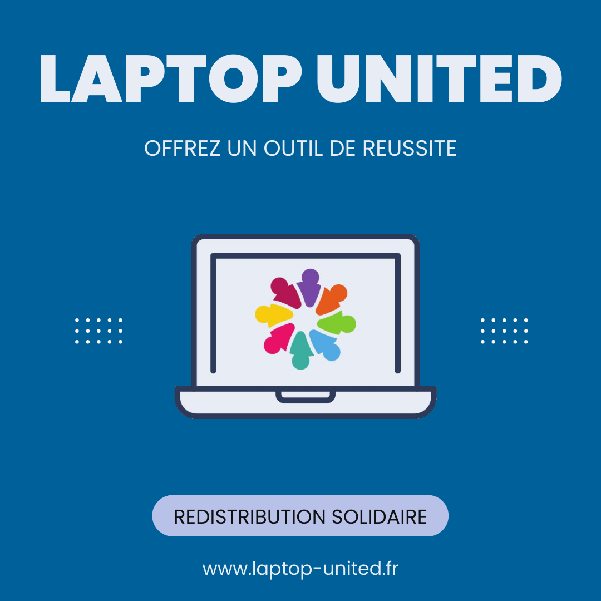

Actuellement en première année à l'EMLV sur le campus de La Defense je suis passionné par la réalisation de projets et l'entreprenariat 💻.
Découvrez mes expériences :
2023 - AUJOURD'HUI
Fondateur et Président d'une association a but non lucratif du nom de LAPTOP UNITED ayant pour objet collecter, reconditionner et redistribuer du matériel informatique à des familles dans le besoin ; consciente de l'importance de l'informatique dans notre société, LAPTOP UNITED vise à réduire la fracture numérique en permettant l'accès à un outil informatique pour tous.
Découvrir l'association 2022 - AUJOURD'HUI
Auto-entrepreneur émancipé depuis 2022, développant une activité commerciale dans le domaine de l’achat et de revente de produits exclusifs.
Gestion de trésorerie, gestion de stock, réalisation d'investissements, mise en place de solutions de transport et de stratégies de ventes. Initialement en B2C via des plateformes de reventes puis spécialisation en B2B encollaborant avec des boutiques physique et en ligne.
Mise en place de sessions de coaching et de conseils à distance pour des particuliers souhaitant se développer dans ce domaine. Gestion de la fiscalité et facturation.
Chiffre d'affaires de 22.000€ sur l'année 2022-2023.
2019 - 2021
Fondateur et actuel président d'honneur d'une association du nom de SYNIX dans le domaine de l'E-Sport visant à : « rassembler un ensemble de joueurs et joueuses disposés à partager leur passion des jeux vidéo et de participer à différents tournois".
Insertion et accompagnement des membres de joueurs et joueuses dans un milieu semi-professionnel en leur permettant d’avoir accès à des sessions de coaching et à différents entraînements. Gestion d'une équipe et encadrement de plus de 25 membres. Recherche et signature de sponsors, mise en place de réunions, prise de décisions. Gestion de la communication sur différents supports et réalisations audiovisuels.